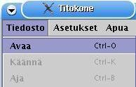
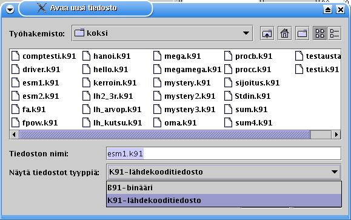
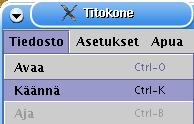

- Valikot
- Lähdekoodi
- Tilatiedot
- Näyttö
- Näppäimistösyötteet
- Symbolitaulu
- Rekisterit
- Kommentti-ikkuna
Titokone on konekielisimulaattori, jonka tarkoituksena on näyttää, kuinka symbolisen konekielen suoritus etenee yksinkertaisella prosessorilla. * kun kuvaillaan koodinäkymää, siinä pitää muistaa korostaa että muisti on yhtenäinen alue vaikka siitä onkin eristetty osa koodialueeksi. Myös maininta siitä, että data-alueella symbolisella arvolla ei ole merkitystä (ja että suurin osa komennoista on jonkinlaisia noppeja) lienee hyvästä. * näppäinshortcutit, jahka varmistuvat, mukaan kuvauksiin.
|
|
|

|
2.1 Titokoneen käynnistäminen |
Titokone on toteutettu javalla ja se käynnistetään jar-paketista.

|
2.2 TTK-91-ohjelman avaaminen |
|  |
Uuden tiedoston avaaminen tapahtuu painamalla käännä-pikakuvaketta tai valitsemalla valikosta Tiedosto --> Avaa. Valinnan seurauksena avautuu tiedostonäkymä. |
|  |
Tiedostonäkymä näyttää nykyhakemiston tiedostot valitun päätteen mukaan. Näytettävät tiedostotyypit erotellaan päätteen mukaan: k91-pääte tarkoittaa lähdekooditiedostoa ja b91-pääte binääritiedostoa.
|
|
|
2.3. Lähdekoodin muokkaaminen |
Lähdekoodia on mahdollista muokata Titokoneessa seuraavasti:

|
2.4 TTK-91-ohjelman kääntäminen |
|  |
Titokoneen käännös on kaksivaiheinen: ensin tehdään syntaksitarkistus ja luodaan symbolitaulu. Toisella kierroksella muodostetaan objektikoodi. Kääntäminen aloitetaan painamalla käännä-pikakuvaketta tai valitsemalla valikosta Tiedosto --> Käännä. Kääntäminen toteutetaan käännösasetusten mukaisesti. joko pysähdellen tai kerralla loppuun asti kääntäen. |

|
Kääntämistä voi suorittaa askel kerrallaan, edeten seuraavaan tapahtumaan asti. |

|
Halutessaan käyttäjä voi suorittaa käännöksen kerralla loppuun. |

|
Käännös voidaan pysäyttää painamalla stop-nappia. |
Tapahtumatyypeillä tarkoitetaan kääntäjän reagointia lähdekoodin sisältöön. Riviä kommentoidaan tai riville pysähdytään asetusten mukaisesti.
Ensimmäinen kierros:
Toinen kierros:
|
|
2.5 Käännösasetukset |

|
Käännöksen aikaisia asetuksia voi muuttaa valitsemalla valikosta Asetukset --> Muokkaa käännösasetuksia. |

|
Käännösasetuksilla voidaan vaikuttaa käännöksen etenemistapaan ja kommentointiin.
|
|
|
2.6 TTK-91-ohjelman lataaminen |
Ohjelman lataaminen tapahtuu automaattisesti
|
|
2.7 TTK-91-ohjelman binäärin tallentaminen |

|
2.8 TTK-91-ohjelman suoritus |

|
K91-tiedoston käännöksen tai b91-tiedoston avaamisen seurauksena ohjelma ladataan muistiin ja on valmis suoritettavaksi. Suoritusnäkymässä koodi-ikkuna on jaettu kahteen osaan, koodi- ja data-alueeseen. On kuitenkin syytä huomioida, että titokoneen muisti on todellisuudessa yhtenäinen alue; muistialueen jako kahteen osaan on toteutettu käytettävyyssyistä. Suoritus aloitetaan painamalla suorita-pikakuvaketta tai valitsemalla valikosta Tiedosto --> Aja. Suoritus toteutetaan suoritusasetusten mukaisesti joko pysähdellen tai kerralla loppuun asti suorittaen. |
|
|
Ohjelman ajaminen voidaan tehdä rivi kerrallaan. |
|
|
Halutessaan käyttäjä voi suorittaa ohjelman yhdellä napin painalluksella. |
|
|
Suoritus voidaan pysäyttää painamalla stop-nappia. |
|
|
2.9 Suoritusasetukset |

|
Suoritusasetuksia pääsee vaihtamaan valitsemalla valikosta Asetukset --> Muuta suoritusasetuksia |

|
Suoritusasetukset ovat melko pitkälti vastaavat käännösasetusten kanssa; lisätoimintona on animointi.
|
Suoritusasetuksia on mahdollista muuttaa myös suoraan pikakuvakkeista:

|
Riveittäin suorituksen kytkeminen päälle tai pois. |

|
Suorituksen lisäkommentoinnin kytkeminen päälle tai pois. |

|
Animointi-ikkunan näyttämisen kytkeminen päälle tai pois. |
|
|
2.10 Muistin tyhjentäminen |

|
Titokoneen muistin voi tyhjentää valikosta valitsemalla Tiedosto --> Tyhjennä muisti. Muistin tyhjentämisen lisäksi toiminnolla voidaan tyhjentää lähdekoodinäkymä. Jos toimintoa käytetään käännös- tai ajovaiheessa, kyseinen toiminto keskeytyy ja ruudulle palautetaan alkunäkymä, jossa rekisterit, symbolitaulu ja koodinäkymä on tyhjennetty. |

|
Titokoneen muistin kokoa on mahdollista muuttaa valitsemalla valikosta Asetukset --> Aseta muistin koko. Muistin kokovaihtoehtoja on kahdeksan erilaista 512 rivistä 65536 riviin asti. Kun uusi muistin koko asetetaan, koodinäkymä tyhjennetään ja näkyville palautetaan alkunäkymä. |

|
Titokoneen käyttöliittymässä on mahdollista vaihtaa kieliasetuksia. Kieli valitaan valikosta Asetukset --> Aseta kieli. Oletuskielinä on suomi ja englanti. Kielen voi vaihtaa suoraan lennosta, lähes riippumatta käyttöliittymän muista toiminnoista. Myös uuden kielen lisääminen on mahdollista Jos käyttäjä on määritellyt oman kielitiedoston, se haetaan valitsemalla valikosta Asetukset --> Aseta kieli --> Valitse tiedostosta.... Tämän jälkeen käyttäjän on haettava luotu kielitiedosto ja avattava se. Jos kielitiedosto on oikeaa muotoa, kieli vaihtuu välittömästi. Jos tietyn tekstin käännösvastine puuttuu kielitiedostosta, käytetään käyttöliittymässä oletuskieltä, englantia, kyseisen sanan kohdalla. |
======================================================================
YHTEENVETO TTK-91-KÄSKYISTÄ
======================================================================
+--------------------------------------------------------------------+
| Käskykoodi ¦ Rj ¦ M ¦ Ri ¦ osoiteosa ADDR |
| 8 bittiä ¦ 3 ¦ 2 ¦ 3 ¦ 16 bittiä |
+--------------------------------------------------------------------+
31 24 23 16 15 0
Symbolisessa konekielessä käskyt esitetään muodossa
VIITE OPER Rj,M ADDR(Ri)
missä OPER käskyn symbolinen nimi
Rj ensimmäinen operandi (rekisteri R0..R7)
M osoitusmoodi:
= välitön operandi
suora osoitus (tyhjä, ei siis merkitä)
@ epäsuora osoitus
ADDR osoiteosa (muistiosoite tai vakio)
Ri mahdollinen indeksirekisteri (rekisteri R0..R7)
Jos jollakin käskyn osalla ei ole merkitystä, sen voi jättää merkitse-
mättä. Käskyn eteen voi laittaa viitteeksi symbolisen osoitteen, jonka
tulee sisältää vähintään yksi muu kuin numeromerkki. Kelvollisia merkkejä
A-Ö, 0-9 ja _. Vain 8 ensimmäistä merkkiä on merkitseviä.
Lähes kaikille käskyille on käytettävissä seuraavat muodot:
OPER Rj,ADDR suora muistiosoitus
OPER Rj,=ADDR välitön operandi
OPER Rj,@ADDR epäsuora muistiosoitus
OPER Rj,ADDR(Ri) indeksoitu osoitus
OPER Rj,=ADDR(Ri) indeksoitu välitön osoitus
OPER Rj,@ADDR(Ri) indeksoitu epäsuora muistiosoitus
OPER Rj,Ri suora rekisteriosoitus
Poikkeuksia ovat:
STORE jälkimmäinen operandi on aina kohdeosoite,
ei voi olla rekisteri, tai vakio.
POP Jälkimmäisen operandin tulee aina olla rekisteri
HYPPYKÄSKYT jälkimmäinen operandi on aina kohdeosoite,
ei voi olla vakio
tilarekisteriä tutkivissa käskyissä on ensimmäinen
operandi merkityksetön
NOP operandeilla ei merkitystä
======================================================================
TTK-91 symbolisen konekielen käskyt
======================================================================
Tiedonsiirtokäskyt:
LOAD vie jälkimmäisen operandin arvon rekisterin Rj arvoksi.
STORE talleta rekisterissä Rj oleva kokonaisluku jälkimmäisen operan-
din arvoksi.
IN lukee jälkimmäisenä operandina kerrotulta laitteelta kokonaislu-
vun rekisteriin Rj (näppäimistöltä esim IN R1,=KBD)
OUT tulostaa rekisterissä Rj olevan kokonaisluvun jälkimmäisenä
operandina kerrotulle laitteelle (näytölle esim. OUT R1,=CRT)
Aritmeettiset ja loogiset käskyt:
ADD (add) lisää rekisterissä Rj olevaan lukuun jälkimmäisen operan-
din arvon.
SUB (subtract) vähennä rekisterissä Rj olevasta luvusta jälkimmäisen
operandin arvon.
MUL (multiply) kerro rekisterissä Rj oleva luku jälkimmäisen operan-
din arvolla.
DIV (divide) jaa rekisterissä Rj oleva luku jälkimmäisen operandin
arvolla. Jakolaskussa vain kokonaisosalla on merkitystä.
MOD (modulo) jaa rekisterissä Rj oleva luku jälkimmäisen operandin
arvolla. Jakolaskussa vain jakojäännösosalla on merkitystä.
AND (boolean AND) looginen JA-operaatio Rj:n ja jälkimmäisen
operandin arvon välillä.
OR (boolean OR) looginen TAI-operaatio Rj:n ja jälkimmäisen
operandin arvon välillä.
XOR (boolean XOR) looginen poissulkeva TAI-operaatio Rj:n ja
jälkimmäisen operandin arvon välillä.
SHL (shift left) siirrä rekisterin Rj bittejä vasemmalle toisen
operandin ilmoittama määrä. Täytä oikeaa päätä 0-biteillä.
SHR (shift right) kuten SHL, mutta siirrä oikealle.
SHRA (arithmetic shift right) kuten SHR, mutta säilyttäen etumerkin
(täytä vasenta päätä etumerkkibitillä).
COMP (compare) vertaa ensimmäisen operandin arvoa toisen operandin
arvoon ja aseta vertailun tulos tilarekisterin bitteihin SR
L=pienempi, E=yhtäsuuri, G=suurempi.
Haarautumiskäskyt:
JUMP (unconditional jump) ehdoton hyppy toisen operandin ilmaisemaan
kohdeosoitteeseen.
JNEG (jump if negative) jos Rj < 0, niin hyppää jälkimmäisenä operan-
dina olevaan osoitteeseen, muuten jatka seuraavasta käskystä.
JZER (jump if zero) jos Rj = 0
JPOS (jump if positive) jos Rj > 0
JNNEG (jump if not negative) jos Rj >= 0
JNZER (jump if not zero) jos Rj <> 0
JNPOS (jump if not positive) jos Rj <= 0
JLES (jump if less) jos tilarekisterin SR bitti L asetettu, niin
hyppää jälkimmäisenä operandina olevaan osoitteeseen, muuten
jatka seuraavasta käskystä (käyttö COMP-käskyn yhteydessä).
JEQU (jump if equal) jos bitti E asetettu
JGRE (jump if greater) jos bitti G asetettu
JNLES (jump if not less) jos bitti E tai G asetettu
JNEQU (jump if not equal) jos bitti L tai G asetettu
JNGRE (jump if not greater) jos bitti L tai E asetettu
Pinokäskyt:
Käskyn ensimmäinen operandi rekisteri Rj osoittaa pinon huipulle pinon
päällimmäiseen alkioon. Pino-osoittimena käytetään tavallisesti rekiste-
riä SP (eli R6).
PUSH Kasvata pino-osoittimen Rj arvoa yhdellä ja vie jälkimmäinen
operandi pinon päällimmäiseksi alkioksi.
POP Poista pinosta päällimmäinen alkio ja vie se jälkimmäisenä
operandina kerrottuun rekisteriin (HUOM: aina rekisteri).
Vähennä pino-osoittimen Rj arvoa yhdellä.
PUSHR Vie pinoon rekisterit R0, R1, R2, R3, R4, R5 ja R6 (SP) tässä
järjestyksessä. Ennen kunkin rekisterin vientiä kasvata pino-
osoittimen Rj arvoa yhdellä.
POPR Nouda pinosta arvot rekistereihin R6 (SP), R5, R4, R3, R2, R1 ja
R0 tässä järjestyksessä. Jokaisella noudolla hae ensin arvo
pino-osoittimen Rj osoittamasta kohdasta kyseiseen rekisteriin
ja sen jälkeen vähennä pino-osoittimen Rj arvoa yhdellä.
Aliohjelmakäskyt:
CALL (call procedure) aliohjelmakutsu, eli kontrollin siirto toisen
operandin ilmoittamaan osoitteeseen. Tallettaa paluuosoitteen
pinoon, jonka huipulle osoittaa Rj.
EXIT palaa aliohjelmasta kutsua seuraavaan käskyyn. Paluuosoite löytyy
pinosta, jonka huipulle osoittaa Rj. Jälkimmäisenä operandina
pinossa välitettyjen parametrien lukumäärä.
Systeemikutsut:
SVC (supervisor call) käyttöjärjestelmän palvelurutiinin kutsu.
(systeemikutsu). Ensimmäisenä operandi pinon huippu Rj ja toisena
operandina palvelun numero. Palvelurutiinikutsut ovat erikoisia
kutsuja ennalta määrättyihin aliohjelmiin. Rutiinien koodi on
näkymättömissä, koodialueen "ulkopuolella".
Palvelunumeroita:
HALT : Lopettaa ohjelman suorituksen.
TIME : Antaa kellonajan. Pinossa välitettävä osoitteet, jonne
halutaan tunnit, minuutit, sekunnit (HUOM: järjestys!).
DATE : Antaa päiväyksen. Pinossa välitettävä osoitteet, jonne
halutaan vuosi, kuukausi ja päivä. (HUOM: järjestys!).
READ : Lukee kokonaisluvun. Pinossa välitettävä osoite, jonne
luku halutaan luettavan.
WRITE: Kirjoittaa kokonaisluvun. Pinossa välitettävä tulostettava
arvo.
Muita:
NOP (no operation) ei toimintaa
======================================================================
TTK-91-konekielen käskykoodit
======================================================================
Käsky Binääri Desimaali Heksadesimaali
NOP 0000 0000 0 00
STORE 0000 0001 1 01
LOAD 0000 0010 2 02
IN 0000 0011 3 03
OUT 0000 0100 4 04
ADD 0001 0001 17 11
SUB 0001 0010 18 12
MUL 0001 0011 19 13
DIV 0001 0100 20 14
MOD 0001 0101 21 15
AND 0001 0110 22 16
OR 0001 0111 23 17
XOR 0001 1000 24 18
SHL 0001 1001 25 19
SHR 0001 1010 26 1A
SHRA 0001 1011 27 1B
COMP 0001 1111 31 1F
JUMP 0010 0000 32 20
JNEG 0010 0001 33 21
JZER 0010 0010 34 22
JPOS 0010 0011 35 23
JNNEG 0010 0100 36 24
JNZER 0010 0101 37 25
JNPOS 0010 0110 38 26
JLES 0010 0111 39 27
JEQU 0010 1000 40 28
JGRE 0010 1001 41 29
JNLES 0010 1010 42 2A
JNEQU 0010 1011 43 2B
JNGRE 0010 1100 44 2C
CALL 0011 0001 49 31
EXIT 0011 0010 50 32
PUSH 0011 0011 51 33
POP 0011 0100 52 34
PUSHR 0011 0101 53 35
POPR 0011 0110 54 36
SVC 0111 0000 112 70
======================================================================
TTK-91-koneen ennalta määrätyt symbolit
======================================================================
Näitä symboleja voi käyttää TTK-91-ohjelmassa niitä erikseen
määrittelemättä.
Symboli Arvo
--------------------
CRT 0
KBD 1
STDIN 6
STDOUT 7
HALT 11
READ 12
WRITE 13
TIME 14
DATE 15
======================================================================
Kääntäjän ohjauskäskyt (valekäskyt)
======================================================================
Kääntäjän ohjauskäskyt antavat ohjeita symbolisen konekielen kääntäjäl-
le. Ne EIVÄT ole varsinaisia symbolisen konekielen käskyjä.
tunnus EQU arvo
Samaistuskäsky EQU määrittelee symboliselle tunnukselle kokonaislukuar-
von. Tunnusta voi käyttää käskyn ADDR -kentässä, jolloin se käsitellään
kuten vastaavaan paikkaan kirjoitettu "arvo".
tunnus DC arvo
Muistinvarauskäsky DC (data constant) varaa yhden muistisanan vakiota
varten, samaistaa varatun muistipaikan osoitteen ja symbolisen osoitteen
"tunnus" sekä asettaa varatun muistipaikan sisällöksi luvun "arvo".
Tunnusta voi käyttää käskyn ADDR-kentässä kuten muistiosoitetta.
tunnus DS koko
Muistinvarauskäsky DS (data segment) varaa muistialueen, jonka koko on
"koko" (sanoina) ja samaistaa varatun muistialueen alkuosoitteen ja
symbolisen osoitteen "tunnus". Käytetään globaalien muuttujien tilanva-
raukseen. Tunnusta voi käyttää käskyn ADDR -kentässä kuten muistiosoi-
tetta.
asetus DEF merkkijono
DEF muuttaa TTK-91-koneen tiedostojärjestelmän simulointiasetuksia.
Merkkijonon 'merkkijono' tulee olla absoluuttinen tiedostopolku.
Esimerkkejä:
STDIN DEF /home/myuser/ttk91/stdin
STDOUT DEF C:\mydir\stdout
Muutettavat asetukset:
STDIN Stdin-datan lähdetiedosto.
STDOUT Stdout-datan kohdetiedosto.
HOME Käyttäjän kotihakemisto. Titokoneessa tätä ei käytetä, vaan
kotihakemisto kysytään Javan virtuaalikoneen kautta itse
käyttöjärjestelmältä.
Oletustiedostot kahdelle ensimmäiselle ovat stdin ja stdout käyttäjän
kotihakemistossa.
Uuden kielen lisääminen Titokoneeseen tapahtuu antamalla käännösvastineet oletuskielenä toimivan kielen sanoille. Oletuskielenä on englanti. Lisättävää kieltä varten kirjoitetaan ohjeiden mukainen Java-tiedosto, joka käännetään ja avataan Titokoneen käyttöliittymän kautta. Uuden kielitiedoston kirjoittaminen käy helpoiten ottamalla mallia olemassaolevasta kielitiedostosta. Avaa koneeltasi ensin tekstieditori, johon haet Titokone.jar -paketin mukana tulleen tiedoston Translations_fi.java -tiedoston hakemistosta fi/hu/cs/titokone/resources. Tekstieditoriin aukeaa Javan ResourceBundle-kalustoa hyväksikäyttävä luokka, joka muodostuu 2-ulotteisesta Object-taulukosta ja sen palauttavasta metodista. Taulukon alkiot näyttävät seuraavilta:
{ "Fetch second operand from memory slot {0}.", "Nouda jälkimmäinen operandi muistipaikasta {0}."},
{ "Indirect memory addressing mode.", "Epäsuora muistiosoitus."},
{ "1: Fetch indexing value from memory slot {0}.", "1: Nouda indeksointiarvo muistipaikasta {0}."},
Jokainen rivi koostuu aaltosulkujen välissä olevasta oletuskielen avainarvosta ja sen käännösvastineesta. Uloimpien aaltosulkujen sisällä on kaksi lainausmerkeillä rajattua tekstikenttää, jotka on erotettu pilkulla toisistaan. Ensimmäisten lainausmerkkien sisällä on oletuskielinen käännösavain. Toisten lainausmerkkien sisällä on käännösvastine. Oma käännösvastine luodaan korvaamalla suomenkielinen teksti. Käännöksiä helpottamaan Translations_fi -tiedostossa on kommenteilla kerrottu mihin osaan käyttöliittymää kyseiset käännökset viittaavat. Ylläolevan simerkin käännöksissä esiintyy erikoismerkkijono, '{0}'. Kyseisen merkkijonon tilalle sijoitetaan muuttuja, joka liittyy käyttöliittymälle välitettävään viestiin. Esimerkin ensimmäisen rivin {0} sisältää muistipaikan numeron; tämä on pääteltävissä itse lauseesta. On mahdollista luoda uusi käännösvastine, jonka muuttuja ei olekaan rivin lopussa, esimerkiksi:
{ "Fetch second operand from memory slot {0}.", "Nouda jälkimmäinen operandi muistipaikasta {0}."},
-->
{ "Fetch second operand from memory slot {0}.", "Muistipaikasta {0} noudetaan jälkimmäinen operandi."},
Uusi kielitiedosto luodaan seuraavasti: